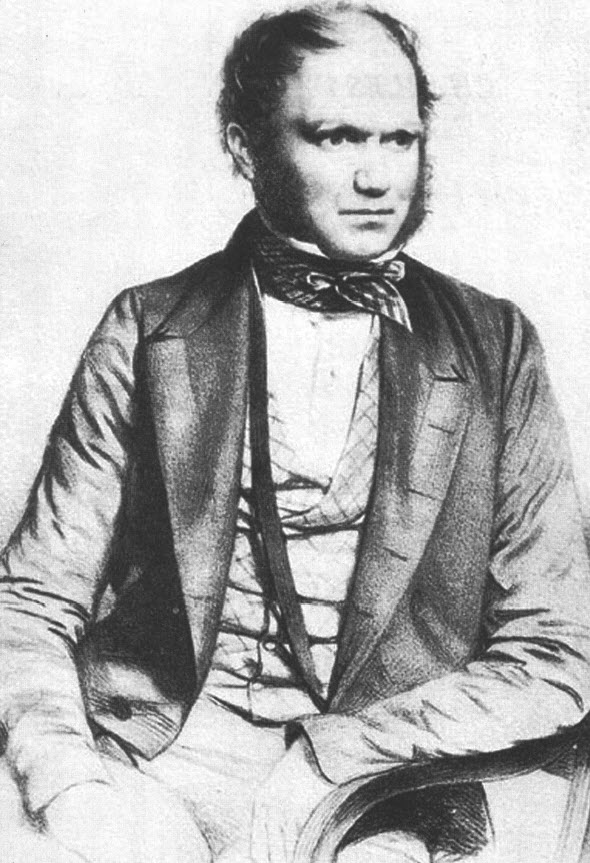
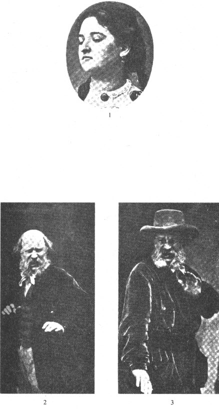
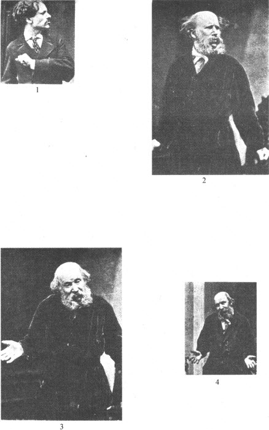
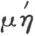

人类的特殊表情——鄙视、轻蔑、厌恶、自觉有罪、骄傲、孤立无援、忍耐、肯定和否定
·Disdain，Contempt，Disgust，Guilt，Pride，Helplessness，Patience，Affirmation and Negation·
在我的一个孩子的面部上，曾经有两次出现我从来没有见到过的最显著的厌恶表情；第一次是在他出生以后5个月的时候，因为倒了一些冷水到他的嘴里而发生的；第二次则在更后1个月的时候，因为把一块成熟的樱桃放进他的嘴里而发生的。他表示厌恶所用的方法，就是：双唇和整个嘴采取一种可以让嘴里所含有的东西迅速流出或者落下的形状；同时舌头也伸了出来。在发生这些动作的时候，还有轻微的颤抖出现。我怀疑这个婴孩是不是真的在发生厌恶，因为他的双眼和前额表现出很大的惊奇和考虑的样子，所以整个看来反而显得很滑稽可笑。

1849年的达尔文（T. H. Maguire画）。
轻蔑、轻侮和鄙视，它们的各种不同的表现——嘲笑——表现出轻蔑、厌恶、自觉有罪、欺骗、骄傲等的姿态——孤立无援和软弱无力——忍耐——顽固——最多的人种所共有的耸肩动作——肯定和否定的表征
轻侮和鄙视，除了含有略微多一些的愤怒心绪以外，很难去和轻蔑区分开来。它们也不能去和上一章里在冷笑和挑战两主题下所讨论到的感情明显地区分开来。厌恶按照它的性质说来，是一种极其特殊的感觉；它是由于某种可厌的东西所引起；首先这就是味觉方面的可厌东西，不管它是实际上被我们所接受到的或者是被我们所鲜明地想象到的都是一样；其次则是嗅觉、触觉和甚至视觉方面的任何一种会引起相似感觉来的东西。虽然这样，极度的轻蔑，就是大家时常所称的近于厌恶的轻蔑（loathing contempt），却很难去和厌恶区分开来。因此，这几种精神状态彼此都有密切的关系；而且每种都可以用很多不同的方法表现出来。有几个著者坚持说，它们主要是一种表现方法；可是，还有几个著者则坚持着另一种表现方法。由于这种情况，列莫因先生就断定说， (1) 他们的记述都是不值得相信的。可是，我们马上就可以看到，我们在这里所考察到的感情，应当由各种不同的方法表现出来，因为根据联合原理，各种各样的习惯性动作可以同样良好地作为这些感情的表达手段。
轻侮和鄙视，也像冷笑和挑战一样，可以被面部一侧的犬齿略微露出的动作表示出来；显然这种动作会逐渐转变成为一种极其相似于微笑的表情。有时微笑或者声笑可能是真正的，但同时也是嘲笑的一种；在这种情形下，可以认为，侵犯者的行为太不足重视，因此他只不过激起了一种喜悦罢了；可是，这种喜悦通常是假装的。盖卡在亲自回答我的询问的信里指出说，轻蔑通常被他的同乡土人——卡弗尔人——用微笑来表明；印度公爵勃鲁克在婆罗洲的达雅克人方面也得到同样的观察资料。因为声笑发出是简单的快乐的表情，所以我以为，幼年的小孩在嘲笑时候就绝不会发出声笑来。
杜庆 (2) 肯定说，眼睑一部分闭合，或者双眼转移开来，或者全身转动开来，也是鄙视的最显著的表情动作。大概这些动作在宣布说，对这个被鄙视的人，不值得使人一看，或者看了也是使人不愉快的。烈治朗德尔先生所拍摄的一张附在本书里的照片（照相图版V，图1），就表明出这种在鄙视时候的表情状态。这张照片所拍摄的是一位年青的小姐；可以推想到，她这种表情是在撕碎了可鄙的爱人的照片时候显现出来的。 (3)

照相图版 V
表示轻蔑的最普通方法，就是使鼻孔附近或者嘴的周围的肌肉进行动作；可是，如果嘴的周围的动作进行得太强烈，那么这就会变成厌恶的表情。在轻蔑的时候，鼻孔可以略微向上翻起，显然这是随着上唇的翻起而发生的；有时这种动作也可以被简化成为单单的皱鼻子。时常鼻子略微收缩，因此鼻内的通道一部分被闭塞； (4) 这时候通常发出轻微的嗤鼻声或者［鼻腔的］呼气声。所有这些动作，都十分像是我们在嗅闻到一种恶浊气味而想要把它隔离开或者排除去的时候所采取的喷鼻动作。根据皮德利特的意见， (5) 在这种感情表现得极其强烈的情形里，我们就要把双唇突出和向上撅起，或者只是把上唇撅起，以便使自己成为好像活门一样去闭住鼻孔，因此鼻子也向上翻转。因此，我们好像在对可鄙的人说，他在发散出恶浊的气味来； (6) 这种情形，也差不多像是我们用半闭眼睑或者转开面部的动作来表示出这个人不值得一看的情形。可是，也不应该去假定说，在我们表明出自己的轻蔑来的时候，这一类思想真的会在脑子里出现；不过因为我们每次在嗅闻到讨厌的气味或者看到讨厌的景象时候，曾经完成过这一类动作，所以它们就变成习惯的或者固定的动作，而且到现在即使在任何类似的精神状态下也被使用起来了。
还有各种各样的小姿态也表明出轻蔑来。例如，捻指发声的姿态就是这样。根据泰洛尔的意见， (7) 这种姿态“并不像我们通常所看到的情形那样会使人非常明白；可是，如果我们去注意到，聋哑者们也做着同样的手势，不过这种手势十分温和，好像有一种微小物体在食指和大拇指之间滚动着似的，或者好像是一种用大拇指的指甲和食指把这种假想的物体弹飞开来的手势，并且他们就把这些手势当做那些表明出任何微小的、没有意义的、使人轻蔑的东西来的通常大家理解的姿态，那么大概就容易推想说，因为我们把这一种十分自然的动作过于夸大而成为沿传的手势语，所以就把它的原来的意义忘却了。有“一种被斯特拉波（Strabo）所提出的关于这种姿态的有趣叙述”。 (8) 华盛顿·马太先生告诉我说，在北美洲的达可塔族的印第安人方面，他们的轻蔑情绪，不仅是用像上面所讲到的这一类面部动作来表达，而且也“用沿传下来的手势语来表达，就是：用一只握拳的手放近胸口，接着突然把前臂伸直，同时张开手掌，分开五指。如果这种手势所针对的那个人正在面前，那么做手势者就把手朝对着他推去，而有时还把头部背着他转过去”。这种突然把手伸直和张开手掌的动作，大概就表示要把一件没有价值的东西推开或者抛去。
“厌恶”（disgust）这个名词的最简单的意义，就是对于一种相反于我们的口味的东西的感觉。使人感到有趣的是，这种感情多么容易被我们的食物的外表、气味和性质方面的任何一种不寻常的东西所激奋起来。以前在我旅行到火地岛上的时候，有一个土人用手指来触碰我在露营时候吃食的冷藏肉，并且显明表示他对这种肉的柔软性质产生厌恶； (9) 同时，我对于一个赤身露体的未开化的人用手指来触碰我的食物这种事情，即使他的双手并不显得污秽，也是感到十分厌恶。在一个人的胡子上沾有一些羹汤，这就会使人看了对它发生厌恶，但是羹汤本身当然是没有什么可以使人厌恶的。我以为，这种厌恶所以会发生，就因为在我们的头脑里，已经牢固地建立起了食物的外貌不论在什么情况下和我们对于吃食它的概念之间的联合关系。
因为厌恶的感觉最初由于联系到吃食或者尝味的动作而发生，所以自然可知，这种表情应当主要是由嘴的周围肌肉的动作所构成。可是，厌恶也同时引起困扰的感觉，因此通常就有皱眉伴同出现，往往还有一种姿态出现，好像要把可厌的东西推开或者保卫自己身体防止它来侵犯的样子。烈治朗德尔先生在他拍摄的两张照片里（照相图版V，图2和图3），相当成功地传达出了这种表情来。至于说到面部方面，那么适度的厌恶可以用下面各种不同的方法来表现：把嘴大张开来，好像要把一口可厌的食物吐出去的样子；喷吐口水；用突出的双唇吹气；或者发出一种喉音，好像是咳出痰来的声音。这种喉音可以用英文字母拼写成ach（阿赫）或者ugh（乌赫）；有时在发出这种声音时候，身体也颤抖起来；两臂靠在身体两侧，而双肩则也像受到恐怖时候所表现的情形一样向上耸起。 (10) 极度的厌恶是用嘴的周围肌肉的动作来表现的；这些动作也和呕吐以前的准备动作相同。嘴张大，上唇后缩得很厉害，因此鼻子两侧起皱纹，而下唇则突出并且尽量向外翻转。下唇的这种动作，必须借助那些把嘴角向下牵引的肌肉收缩来进行。 (11)
值得使人注意的是，有些人单单发生一种好像已经吃到了某种不寻常的食物（例如，他们通常不去吃食的一种食物）的观念，也会多么容易而且迅速地作起干呕（打恶心）或者真正的呕吐起来；甚至是在这种食物里并不含有丝毫使胃脏作呕的物质，也曾发生这种情形。当呕吐由于某种实际的原因（例如吃得太饱，或者吃了腐败的肉，或者服用了呕吐药）而作为反射作用发生出来的时候，它并不是一下子就发生的，却通常要过了相当的一段时间以后才发生。因此，为了要来说明这种单单由于观念而很迅速和容易被激发起来的干呕和真正的呕吐起见，我们就不得不去猜测说， (12) 我们的祖先在古时候一定具有一种能力（也像反刍动物和几种其他的动物所具有的能力一样），能够有意地把那些不合于他们的口味的食物，或者那些被他们想象为不合口味的食物，从胃里呕吐出来；而现在，虽然这种能力从它依存于意志方面说来已经丧失，但是仍旧可以由于以前所牢固地建立起来的习惯的力量、在我们的头脑里每次对于已经吃食到任何一种食物的观念方面、或者对于任何一种厌恶的东西方面发生反感的时候，马上重现出来，成为不随意的动作。这个猜测已经从塞登先生向我确言的事实方面得到证实。这个事实就是：动物园里的猿往往在十分健康的时候发生呕吐。看上去，它们好像是有意在做着这种动作似的。我们可以知道，每个人恐怕已经很少有机会去使用有意呕吐出食物来的能力，因为都能够用语言来把各种应当忌食的东西的知识告诉自己的孩子和别人；因此，这种能力由于不再使用而有丧失的倾向。 (13)
因为嗅觉和味觉有极其密切的关系，所以不必惊奇，有些人在嗅闻到特别恶劣的气味时候，也像在想象到可厌的食物时候一样，十分容易发生干呕或者真正的呕吐；因此以后甚至一种适度的可厌气味，也会引起各种不同的厌恶的表情动作来。腐臭气味所激起的干呕的倾向，会由于某种程度的习惯立刻奇妙地被加强起来，不过也会由于我们长期习惯于恶臭的原因或者由于有意的抑制自己而很快丧失。例如，我曾经想去清洗一只鸟的骨骼；这只鸟还没有被药液完全浸透，因此它的臭气就使我的仆人和我自己（当时我们对于这类工作还没有多大经验）激烈地干呕来，以致我们两人不得不放弃这个工作。在那次的以前几天里，我曾经察看过几副其他的骨骼；它们略微有些臭气，但是一点也没有使我感到难受；可是在以后几天里，每次在我一拿起这些同样的骨骼时候，它们就会使我干呕起来。
从我的通信者们所寄回来的答复方面可以认为，在全世界的大部分地区里，普遍存在着上面所叙述到的这些作为表示轻蔑和厌恶用的各种不同的动作。例如，罗特罗克博士对于北美洲的某些野性的印第安人部落方面的观察，得出了绝对肯定的答复。克朗兹说道，格陵兰人在用轻蔑或者恐怖的情绪来否认任何事情的时候，就把鼻子向上翻起，并且从鼻子里发出一种轻微的声音来。 (14) 斯各特先生曾经寄送给我一张印度青年的面部表情图解；这个图解表明出这个青年在看到那种经常强迫他服用的蓖麻子油时候的状态。斯各特先生也曾经看到，有些上流的印度人在十分接近某种污秽物体的时候，发生出同样的表情来。勃烈奇斯先生说道，“火地岛人用双唇向外突出 (15) 和发出他们所特有的咝咝声的方法，和用鼻子向上翻起的方法，来表示轻蔑”。在我的通信者们当中，有几个人或者观察到鼻子喷气的倾向，或者观察到发出一种用ugh（乌赫）或ach（阿赫）来表示的嘈声的倾向。
喷吐口水大概是轻蔑或者厌恶的一种几乎普遍的表征；这种动作显然表明要把任何一种可厌的东西吐出嘴外去。莎士比亚借剧中人诺尔福克（Norfolk）公爵的话说道：“我向他喷吐口水；把他叫做造谣中伤的胆小鬼和流氓。”还有，他借法尔斯塔夫（Falstaff）的话来说道：“哈尔，我告诉你一件事情；倘使我是说谎，那么你就向我面上吐口水好了。”李黑哈特指出说，澳大利亚人“用吐口水或发出一种像pooh！pooh！（普！普！）的嘈声，来打断自己的说话，显然这是他们的用来表示厌恶的动作”。舰长白尔顿（Burton）也讲到，有些黑人“带着厌恶的表情向地上吐口水”。 (16) 陆军上校斯皮德告诉我说，埃塞俄比亚人也做出相同的姿态来。吉契先生说道，马来半岛的马来人的厌恶表情，就是“从嘴里吐出口水来”。又根据勃烈奇斯先生的叙述，火地岛人认为，“向人喷吐口水，就是表示极大的轻蔑”。
在我的一个孩子的面部上，曾经有两次出现我从来没有见到过的最显著的厌恶表情；第一次是在他出生以后5个月的时候，因为倒了一些冷水到他的嘴里而发生的；第二次则在更后1个月的时候，因为把一块成熟的樱桃放进他的嘴里而发生的。他表示厌恶所用的方法，就是：双唇和整个嘴采取一种可以让嘴里所含有的东西迅速流出或者落下的形状；同时舌头也伸了出来。在发生这些动作的时候，还有轻微的颤抖出现。我怀疑这个婴孩是不是真的在发生厌恶，因为他的双眼和前额表现出很大的惊奇和考虑的样子，所以整个看来反而显得很滑稽可笑。这种让可厌的物体从嘴里落出的伸舌动作，大概可以用来说明为什么伸舌普遍成为轻蔑和憎恨的表征。 (17)
我们现在已经知道，可以用很多不同的方法，靠了面部的动作和各种不同的姿态，来表示出轻侮、鄙视和厌恶；在全世界各地，都同样有这些动作和姿态的表现。它们全部都是由那些表明要把某种使我们讨厌或者痛恨的实际物体吐出去或者排除去的动作所构成；不过，这种实际物体还不至于使我们发生某些更加强烈的情绪，例如大怒或者恐怖；还有，每次在我们的头脑里发生任何一种类似的感觉时候，由于习惯的力量和联合，也会发生出相似的动作来。
嫉妒、妒忌、贪欲、报仇，猜疑、欺骗、狡猾、自觉有罪、虚荣、自夸、野心、骄傲、谦逊等——在上面所举出的这些复杂的精神状态当中，是不是大多数精神状态都可以用一种被十分明确地叙述或者描写出来的固定表情所显示出来，这还是一个疑问。莎士比亚把妒忌（envy）叫做形容消瘦，或者脸色发黑，或者苍白，而把嫉妒（jealousy）则叫做“绿眼怪物”（the green-eyed monster）；斯宾塞把猜疑（suspicion）描写做“污臭，丑陋和凶恶”；这两个人在作这些说明的时候，一定感到很难表达出这些精神状态的原意来。虽然这样，上面这些感情，至少是它们当中的多数，却可以用眼睛辨认出来，例如自夸的表情就容易被看出来；可是，与其说是我们受到这些外表特征的引导，倒不如说，往往非常出人意料地受到那些对于人和环境的先入观念的引导。
我的通信者差不多一致肯定地回答了我所提出来的一个问题，就是：在各种不同的人种当中，是不是能够辨认出自觉有罪和欺骗的表情来； (18) 因为他们一般都否认可以这样去辨认出嫉妒来，所以我就认为他们的回答是可以去辨认出嫉妒来，所以我就认为他们的回答是可以确信的。他们在那些举出详细情节来的情形里，差不多时常提到眼睛的表情。据他们说，犯罪的人不敢去瞧望叱责他的人，或者只是偷瞧几回。他们把这时候的眼睛描写做“成为斜眼”，或者“向着左右两侧摆动”，或者“眼睑下垂和一部分闭住”。后面这种现象，是哈格纳乌尔先生从澳大利亚土人那里观察到的，也是盖卡从卡弗尔人那里观察到的。双眼不安定的移动，显然是由于犯罪的人忍受不住叱责者凝视他的目光而发生的；在后面讲到脸红的时候，将再来说明这一点。在这里我可以补充说，我曾经观察到，在我自己的小孩当中，有几个在极小年纪的时候，显现出一种自觉有罪的表情，但是并不带有恐惧的神色。当中有一个小孩在2岁零7个月的时候，确实明显地做出这种表情来，因此使人可以觉察出他犯了小罪。根据我当时在自己的笔记本上所作的记录，他的这种表情就是：眼睛发亮得很不自然，还有一种描写不出来的奇特的拘束的样子。
我以为，狡猾也主要是以眼睛周围的肌肉动作来表现，因为由于长期不断的习惯力量，这些动作要比身体的动作较少受到意志的支配。赫伯特·斯宾塞先生指出说， (19) “如果出于意料地发生一种要去瞧看视野的某一侧的物体的欲望，那么我们就有一种倾向，要阻止头部作显著的移动，并且用眼睛来作必要调整，所以双眼就被很厉害地牵引到一侧去。因此，如果我们的眼睛向一侧转动，而同时面部却不随着向同一侧转动过去，那么这就产生出了所谓狡猾的自然表现的姿态语” (20)
在上面所举出的一切复杂情绪当中，大概要算骄傲表现得最明显。一个骄傲的人就用竖直自己的头部和身体的姿态，来表示自己比其他的人优越的感觉。他是高傲的（高尚的），或者高等的，并且想尽办法要使自己显出高大的样子来，因此大家就比喻地把他的样子叫做骄傲得全身肿胀起来或者被吹胀起来。有时大家就把孔雀或者吐绶鸡（火鸡）张开羽毛作昂首阔步的姿态，看做是骄傲的象征。 (21) 傲慢的人就从上向下来瞧看别人，并且垂下眼睑，几乎是不屑去瞧看别人；有时他也会用轻微的动作，例如上面已经叙述到的鼻孔或者双唇附近的肌肉动作，来表示自己的轻蔑。因此，就有人把那条使下唇翻出的肌肉，叫做musculus superbus （骄傲肌）。克拉伊顿·勃郎博士曾经寄赠一些高傲偏狂病患者的照片给我；当中有几张的患者头部和身体挺直，而同时嘴则紧闭。嘴紧闭的动作，也是决断的表情动作；我以为，这是由于骄傲的人对自己感到十分自信而发生的。整个骄傲表情是和谦逊表情直接对立的；因此，在这里也用不到再来谈到谦逊的精神状态了。
孤立无援，忍耐；耸肩 (22) ——如果一个人想要表示自己不能够去干某种事情，或者不能够去阻止某种已经被人在干的事情，那么他时常会把双肩以急速动作向上耸起。同时，如果他把这个姿态完全做出来，那么他就会把双肘弯曲，向内贴紧，又把张开的双手举起，而且转向外方，同时五指分开。时常头部略微掉向一侧；双眉上扬，因此在前额上发生横皱纹。嘴通常张开。为了表明出怎样无意识地使面容受到这种影响起见，我可以来指出说，虽然我故意耸起双肩，以便观察自己的双臂这时候所处的位置，但是我完全觉察不出自己的双眉上扬和嘴张开的情形，只有后来在瞧看镜子里的自己的像时候，才看出这些动作来；从此以后，我就看出其他的人的面部在这种情形下也有同样的动作。在现在所附印出来的照相图版VI，图3和图4里，烈治朗德尔先生已经成功地拍摄出了耸肩的姿态来。

照相图版 VI
英国人比欧洲的多数其他民族的人更加不容易把自己的感情显露出来，因此他们也比法国人或者意大利人耸肩的次数少得多，而且耸得很不强烈。这种姿态有各种不同程度的差异，从刚才所讲到的复杂的动作，一直到只是一刹那的很难辨认出来的双肩上升的情形都有；或者例如我曾经注意到一个坐在安乐椅里的太太，她只是把一双五指分开的张开的手略微转向外面罢了。我从来没有看到年纪幼小的英国小孩耸肩，但是有一位医学教授兼精明的观察者，曾经仔细观察了下面的一个关于耸肩的事实，并且把它转告我。这位教授先生的父亲是巴黎人，母亲是苏格兰贵妇人。他的妻子是英国世系的父母所生；因此我的这位报告者不相信她在一生中曾经耸过双肩。他的孩子们在英格兰被抚育起来，而奶妈是纯粹英国血统的妇女；从来没有人看到她耸肩。可是，他的大女儿在出生以后16～18个月的年龄时候，却被他观察到有耸肩的动作；她的母亲当时就喊叫起来道：“瞧吧，这个小法国女孩耸起双肩来了！”起初这个女孩时常做出这种动作来，有时还把头部略微向后仰起，或者向旁边偏斜；可是据他们所能观察到的情形说来，她并没有像通常的状态那样扬起眉毛和摊开双手来。这种习惯后来逐渐消失，而到现在，当她的年纪略微超过4周岁的时候，就不再看到她做这种动作了。她的父亲听到人家说，他有时也要耸肩，特别是在和任何一个人进行论争的时候会耸起双肩来；可是，他的大女儿会在这样幼小的年纪去模仿他的动作这件事，是极不可能的，因为据他所说，他的女儿绝不可能时常看到他做出这种姿态来。不但这样，如果这种习惯真的会从模仿他而获得，那么这个女孩，还有后面就要讲到的第二个女孩（她的妹妹），显然就不会这样很早就自发地消失去这种习惯；要知道她们仍旧和父亲居住在一起。还可以补充说一下，这个小女孩的面貌，和她的巴黎籍的祖父相似，简直相似到使人感到滑稽的程度。她还具有另一种和祖父相似的很有趣的动作，就是惯常做出一种奇特的手势。在她急不可耐地想要得到某种东西的时候，她就伸出自己的小手，迅速把大拇指去和食指和中指摩擦起来；现在她的祖父在同样情况下，也时常做出这种手势来。
这位教授先生的第二个女儿，也在18个月的年龄以前有耸肩的习惯，但是后来这种习惯就消失了。当然，她可能会去模仿大姐的动作；可是，在她的姐姐已经丧失耸肩的习惯以后，她仍旧继续做着这种动作。她起初在和姐姐相同年龄的时候，要比姐姐较少相似于她的巴黎籍的祖父，但是现在反而比姐姐更加相似于祖父了。她到现在也惯常在不耐烦的时候，做出同样的奇怪的习惯，就是把自己的大拇指和食指与中指一同摩擦起来。
在上面这个情形里，也好像前面的一章里所讲到的情形一样，我们可以看到一种手势或者姿态的遗传方面的良好实例，因为我以为，绝没有人会把祖父和他的两个从来没有看到过他的孙女所共有的这种多么奇特的习惯，单单看做是偶然相合的情形。
如果去考虑到一切有关这些女孩耸肩的情况，那么不管在她们的血管里只含有四分之一的法国人的血液，不管她们的祖父并不时常耸肩，总是很难使人怀疑，她们已经从法国祖先那里遗传到了这种习惯。这两个女孩在很早的幼年时代由于遗传而获得一种习惯，后来就丧失了；虽然这方面的事实是有趣的，但是也绝不是很奇特的，因为在很多种类的动物方面，也时常发生这类现象，就是：有些特征被它们在幼年时候保留过一个时期，但是后来就丧失了。
因为我曾经有一段时间以为，像耸肩这类复杂的姿态和同时一起出现的动作会是天生的这种事实极不可能出现，所以我就很急切地要确实知道，究竟那个不能用模仿办法来学得习惯的瞎子兼聋子的女郎拉乌拉·勃烈奇孟是不是也做着耸肩动作。我通过殷纳斯（Innes）博士的关系，从一个最近曾经看护她的妇女那里听说，她也像其他人一样，在同样的情况下耸起双肩，把双肘向内转动，并且扬起双眉来。我也曾经急切地要知道，各种不同的人种，尤其是那些从来没有和欧洲人有较多来往的种族，是不是也做出这种姿态来。我们就将知道，他们也同样会耸肩，不过好像这种姿态有时只限于双肩的上升或者耸起，而没有同时出现其他的动作。
斯各特先生时常看到，加尔各答植物园里所雇佣的孟加拉人和丹加尔人（Dhangars，这是一个和孟加拉人不同的种族）也有这种姿态；例如，他们在声明不能够去干某种工作（例如举起重物）的时候，就会这样。他曾经命令一个孟加拉人去爬一棵高大的树；可是，这个人就耸起双肩，左右摇头，并且说他不会干。斯各特先生已经知道这个人是懒汉，认为他能够干这件事，因此就硬要他去爬树。于是，那个人的脸色变得苍白起来，两臂分垂身旁，嘴和双眼张开得很大，并且再去打量那棵树，此后又斜眼瞧望斯各特先生，耸起双肩，把双肘内转，伸出一双摊开的手，并且用急速摇头几次来声明自己没有本领。爱尔斯金先生也曾经看到印度的土人耸肩；虽然这些土人也同时把双肘向内转动，但是他从来没有看到转动得像我们那样很显著；他们在耸肩的时候，有时把双手按在胸口，但是并不交叉起来。 (23)
吉契先生时常看到，马来半岛内地的马来人，还有布吉人（Bugis，是真正的马来人，但是双方所讲的语言不同），都做出这种姿态来。我以为，他的观察是完全的，因为吉契先生在回答我所询问的关于双肩、臂、手和面部的动作的叙述方面的问题时候指出说，“这种姿态表现得很优美”。我曾经遗失了一册记录有某一次科学研究的航行记的抄本；在这本书里，详细地记述了太平洋里的加罗林群岛（Caroline Archipelago）上的几个土人（密克罗尼西亚人，Micronesians）的耸肩情形。陆军上校斯皮德告诉我说，埃塞俄比亚人也耸肩；可是，他没有作详细说明。阿沙·格莱夫人在亚历山大里亚（Alexandria）地方，看到一个阿拉伯人翻译，也曾经完全像我的询问信上所讲述的情形那样做过这种姿态；当时他伴随着一个老年绅士，而这个绅士则不愿依照他所指点的正确的方向走路，所以他就耸起双肩来。
华盛顿·马太先生关于美国西部的野性的印第安人方面写道：“我曾经有几次观察到这些人使用一种表示道歉的耸肩动作，但是还没有看到您在询问信里所讲述到的其他表现。”弗里兹·米勒告诉我说，他曾经看到巴西的黑人耸肩， (24) 但是当然很可能他们由于模仿葡萄牙人而学会这种动作的。巴尔般夫人从来没有看到南非洲的卡弗尔人做过这种姿态；从盖卡对我所提出的这方面的问题的回答来判断，显然他连我的叙述的意义也没有理解清楚。斯文和先生也怀疑中国人是否会耸肩， (25) 但是曾经看到，在那些会使我们欧洲人耸肩的情况下，中国人把右肘紧贴在右肋，扬起双眉，举起手来，把手掌向着对方的人，并且把它左右摇摆。最后，至于说到澳大利亚人，那么有我的四个通信者用简单的否定语气来回答我，而有一个通信者则用简单的肯定语气来回答我。彭耐特先生在观察维多利亚殖民地的边远地区方面具有绝好的机会，却也用“yes”（是的）来回答我，而且补充说，他们在做出这种姿态的时候，“要比文明的民族进行得更加温和而且不大明显些”。可以认为，这种情况就表明出我的四个报告者还没有注意到这种姿态。
所有这一切关于欧洲人、印度人、印度的山地部落、马来人、密克罗尼西亚人、埃塞俄比亚人、阿拉伯人、黑人、北美洲的印第安人以及显然还有澳大利亚人（在这些土人当中，很多土人都简直没有和欧洲人来往过）方面的资料，已经足够表明出，耸肩，在有些情形里还连带发生其他相当的动作——正就是人类所本来具有的姿态。
这种姿态所表明的意义，对我们本身方面说来，是指一种无意的或者不可避免的动作；或者是指我们所不能够完成的一种动作，或者是指我们无法阻止的、由另一个人所完成的动作。时常在做出这种姿态的时候，还发出下面一类说话：“这不是我的过失”；“我不能够赠送这件心爱的东西”；“他硬要照他自己的想法干下去，我不能阻止他。”耸肩也表示出忍耐，或者缺乏任何反抗的意图。因此，有一个艺术家曾经对我说，这些使双肩上升的肌肉，有时也叫做“忍耐肌”（the patience muscles）。
戏剧里的犹太人显洛克（Shylock）说道：
安托尼奥先生，您曾经多次而且时常
为了我的借金和我的重利
而在里阿多耳交易所里辱骂我；
可是我总是用忍耐的耸肩来忍受了它。
——《威尼斯商人》，第1幕，第1场
贝尔爵士曾经提供出了 (26) 一个人的生动的画像；这个人由于遇到可怖的危险而向后退缩，并且由于激烈的恐怖而准备要发出尖叫来。这时候他的表现就是：他的双肩几乎高耸到耳朵边，并且立刻声明自己没有反抗的意图。
因为通常耸肩所表明的意义是“我干不了这件事情或者那件事情”，所以在作一下轻微的变化以后，它有时就表示“我不愿去干这件事情”。这个动作因此也就表示一种不肯行动的顽强决心。奥耳姆斯替德（Olmsted）叙述到塔州（Texas）的一个印第安人； (27) 当有人告诉这个印第安人说，到来的一队人是德国人，而不是美国人的时候，他因此就把双肩耸得极高，表示他不愿去和这一队人发生任何关系。可以看到，愠怒而且顽固的小孩会把双肩耸得很高；不过这种动作并不和通常在真正耸肩时候一起发生的其他动作联合起来。有一位卓越的观察者， (28) 在讲述到一个青年决心不愿服从父亲的希望时候写道：“他把双手深插进自己的衣袋里，并且把双肩高耸到耳朵边；这种动作表示出一种明显的警告：不管是对是错，甚至是这座岩石连根被移走，我这个男子汉还是毫不让步，因此在这里一切对这方面的劝说都是毫无用处的。只要这个儿子的要求一获得满足，他马上会把自己的双肩恢复到原来的位置。”
有时就用张开的双手彼此重叠起来，放置在身体的下半部分处，来表明顺从（resignation）。要是奥格耳博士不向我指出，他有两三次在那些准备要受到氯仿的麻醉手术的病人方面观察到这种顺从的表情，那么我就会把它当做是一种不值得使人加以注意的姿态了。这些病人在这时候并不表现出很大的恐惧来，但是显然在用双手叠放的姿态来声明说，他们已经下定决心，并且对不可避免的情形表示顺从。
现在我们可以来探查一下，为什么全世界各地的人在感觉到（不管他们是不是愿意表示出这种感情来）他们不能够或者不愿意去干某种事情，或者不愿意去反对另一个人已经干过的某种事情的时候，都会耸起双肩，同时还时常把双肘弯曲，摊开手掌，分开五指，往往把头部略微偏向一侧，扬起双眉，而且还张开嘴来。这些精神状态，有时单单是被动的，有时则表明一种不愿去干某种事情的决心。在上面所说的动作当中，没有一个动作是有丝毫用处的。我毫不怀疑地以为，这些动作只可以根据无意识的对立原理来获得说明。 (29) 在这里，显然也像以前所讲到的狗的情形一样，受到这个原理的支配；狗在发生怒恨的时候，为了使敌方感到它的样子可怖，就采取了相当的姿态；可是，当它一发生恋情的时候，它马上就使全身转变成完全相反的姿态，即使这种姿态对它没有直接用处也会这样。
让我们现在来考察一下，一个发怒而且不愿受到某种损害的愤慨的人，怎样把自己的头部直竖，双肩挺起，并且使胸部扩大起来。这个人时常握紧拳头，把一臂或者双臂置放在适当的位置上，以便进攻或者自卫；同时他的四肢的肌肉变得刚硬。他皱着眉（就是他把双眉收缩和下垂），并且下定决心，把嘴紧闭。一个孤立无援的人的动作和姿态，在上述的任何一个方面，却恰恰和这个愤慨的人的动作和姿态完全相反。在照相图版VI里，我们可以想象到，左边的一个图中人像刚正在说，“你侮辱我有什么意义？”而右边的一个图中人则在回答道，“我实在没有办法可想呀！”孤立无援的人无意识地收缩前额上的一部分肌肉，这些肌肉的动作是和那些引起皱眉的肌肉的动作相反的，因此也就把双眉向上扬起；同时他还使嘴的周围肌肉松弛起来，因此下颚也就下垂。在这本书里所附的照相图版里，可以看到，在各种细节方面，不仅是在面部的表情动作方面，而且在四肢的位置和全身的姿态方面，都完全显露出这种对立情形来。因为孤立无援的人或者道歉的人时常想要表明出他的精神状态来，所以他就用显明可见的或者有实证性的方法来行动。
因为在一切人种方面，当他们感到愤慨并且准备要进攻敌人的时候，他们绝不是普遍都采取双肘向外转动和紧握拳头的姿态，所以根据这种事实也可以认为，在世界上的很多地方，孤立无援或者道歉的心绪单单就用耸肩来表现，而不同时把双肘向内转动和张开双手。大人或者小孩不论在顽固的时候，或者在对某种重大的不幸事件表示顺从的时候，都绝没有任何一种要采取积极方法来行动的观念，因此他就单单用双肩向上升起的动作来表达这种精神状态，或者他有时也可能把双臂交叉叠放在胸口。
肯定或者赞成的姿态，否定或者不赞成的姿态；点头和摇头——我很有兴趣地要去确实查明，我们通常在肯定和否定方面所使用的姿态，在全世界各地究竟普遍到什么程度。实际上，这些姿态在一定程度上表现出了我们的感情，就是：我们在赞成自己的孩子的行为时候，就带着微笑向他们作着赞成的点头；而在不赞成他们的行为时候，则带着皱眉向他们摇头。婴孩表示否定的最初动作，就是拒绝食物；我曾经多次从自己的婴孩方面观察到，他们在拒绝吃奶时候，就把头部从母亲的胸口处横转开来，或者在拒绝任何一种喂给他们吃的东西时候，就从食匙处转过头去。在接受食物和用嘴吃食它的时候，他们把头向前倾斜。自从我作了这些观察以后，有人告诉我说，莎尔马（Charma）也有同样的见解。 (30) 应当注意，他们在接受或者拿取食物的时候，只做着一种简单的前进动作；还有一种简单的点头动作表示肯定的意义。另一方面，小孩在拒绝食物的时候，特别是在被强迫接受食物的时候，就时常会把头部左右摇摆几次，也像我们在否定时候作着摇头的姿态。不但这样，在表示拒绝的时候，也有不少人把头部向后仰起，或者把嘴闭紧，因此这些动作大概也被用来作为否定的姿态。魏之武先生对这个问题指出说， (31) “在闭着牙齿或者双唇而用力发声的时候，就发出字母n（恩）或者m（姆）的音来。因此，我们就可以去说明语气词ne［不］用来表示否定的意义，大概希腊语的

也具有同样的意义”。瞎子兼聋子的女郎拉乌拉·勃烈奇孟“经常说yes（是）的时候也作着普遍表示肯定的点头动作，而在说no（不是）的时候则也和我们一样作着否定的摇头动作”；从这一点极可能使人认为，这些姿态是天生的或者本能的，至少安格鲁撒克逊人（英国人）是这样的。要是没有李别尔先生提出相反的说法， (32) 那么我就一定会认为，她因为具有惊人的触觉和对别人的动作的理解力，所以会获得或者学到这些姿态。至于说到那些已经退化到永久不会去学习说话的小头症白痴，那么伏格特曾经叙述了他们当中的一个的情形：当有人问这个白痴是不是再想吃一些东西或者喝一些饮料的时候，他就用头部向前倾斜或者左右摇动来回答。 (33) 希马尔兹（Schmalz）在自己所著的关于聋哑者和那些智力比白痴略高一些的小孩的教育方面的著名论文里认为，他们能够时常做出并且理解到这些普通表示肯定和否定的姿态的意义。 (34)
虽然这样，如果我们注意到各种不同的人种，那么就可以知道，这些姿态却不像我们所预料的那样被普遍使用；不过，如果把它们归进到完全沿传的姿态或者人造的姿态语方面去，那么这似乎又太一般了。我的通信者肯定说，马来人、锡兰的土人、中国人、西非洲的几内亚海岸的黑人都使用这两种姿态；还有，根据盖卡的说法，南非洲的卡弗尔人也是这样，不过巴尔般夫人则说，她从来没有看到卡弗尔人使用摇头的姿态来表示否定。至于说到澳大利亚人，那么有7个观察者都一致说，他们用点头来作为肯定的表示；有5个观察者一致说，他们用摇头来作为否定的表示，同时发出或者不发出否定的话来；可是，但松·拉西先生从来没有看到昆士兰那里的澳大利亚土人摇头表示否定；巴尔满先生说道，吉普兰地方的土人用把头部略微后仰和伸出舌头的姿态来表示否定。在澳大利亚北端，靠近托列斯海峡（Torres Straits）处，土人在发出否定的话时候，“并不同时摇头，但是举起右手来，把它旋转半周，又再回旋，这样旋转两三次”。 (35) 据说，现代的希腊人和土耳其人采用一种把头后仰并且用舌头发出咯咯声的方法 (36) 来表示否定，而土耳其人还用一种好像我们摇头时候所做出的动作来表明“是的” (37) 。陆军上校斯皮德告诉我说，埃塞俄比亚人在表示否定的时候，就把头部向右肩方面急投，同时发出轻微的咯咯声，而嘴则闭合；他们在表示肯定的时候，则把头部后仰，并且使眉毛急速上扬一次。阿多耳夫·梅伊尔博士告诉我说，菲律宾群岛的吕宋岛（Luson）上的土人塔加尔人（Tagals）在说“是的”时候，也把头部向后仰。 (38) 根据印度公爵勃鲁克的叙述，婆罗洲的达雅克人用双眉上扬的动作来表示肯定，并且用略微皱眉的动作来表示否定，同时还用双眼作着特殊的瞧看。阿沙·格莱教授和他的夫人从尼罗河边的阿拉伯人方面得出结论说，他们很少用点头来表示肯定，而从来没有用摇头来表示否定，甚至他们也不懂得这种动作的意义。爱斯基摩人用点头来表示“是的”，而用霎眼来表示“不是”。 (39) 新西兰人用头部和下颚向上升起的动作，来代替肯定的点头。 (40)
关于印度人方面，爱尔斯金先生根据有经验的欧洲人和受有教育的印度绅士所作的调查报告，得出结论说，印度人的肯定和否定的姿态有种种不同：有时也像我们欧洲人一样，使用点头和摇头的动作；可是，他们在表示否定的时候，更加普遍地把头部突然向后和略微向一侧投去，同时用舌头发出咯咯声来。在各种不同的种族里，可以观察到这种用舌头发出的咯咯声；可是，我不能够想象到这种声音的意义是什么。有一个印度绅士肯定说，印度人在表示肯定的时候，时常把头部向左侧投去。我曾经请斯各特先生特别去注意观察这种动作；他在作了多次观察以后，就认为印度人在表示肯定的时候，通常并不使用点头的动作，而是最初把头部向左后方或者右后方仰起，然后再只做一次倾斜地向前方急投的动作。一个比较粗心的观察者大概就会把这种动作当做是摇头。斯各特先生还肯定说，印度人在表示否定的时候，通常差不多使头部保持竖直的位置，并且摇动几次。
勃列奇斯先生告诉我说，火地岛人在表示肯定的时候从上向下点头，而在表示否定的时候则左右摇头。关于北美洲的未开化的印第安人方面，根据华盛顿·马太先生的叙述，他们的点头和摇头的动作，是从欧洲人那里学来的，而不是自己本来所使用的。他们在表示肯定的时候，“用一只手（除了食指伸直以外，其余的手指都屈曲起来）从身体一边向下方和外方划一条曲线；而在表示否定的时候，则把张开的手向外移动，同时手掌则朝向内侧”。其他的观察者则说道，印度人表示肯定的姿态是把食指向上举起，接着又把它降下并直指地面；或者是把手从面部起直接向前方挥动；而他们表示否定的姿态则是把食指或者全手左右摇动。 (41) 大概这种把食指和手左右摇动的姿态，在一切情况里都是代表左右摇头的姿态的。据说，意大利人也同样地把一只上举的手指从左向右移动来表示否定；实际上，我们英国人有时也是用这种动作来表示否定的。
总之，我们已经看出，肯定和否定的姿态，在各种不同的人种方面有相当大的差异。至于说到否定方面，如果我们承认，手指或者手左右摇动是摇头动作的象征，并且承认头部突然后仰表示幼年小孩在拒绝食物时候常常采取的动作之一，那么全世界在否定的姿态方面就有很显著的一致性，因此我们也可以看出它们起源是怎样的。阿拉伯人、爱斯基摩人、有些澳大利亚的土人部落和达雅克人在这方面的表情，则是最显著的例外。达雅克人把皱眉来作为否定的表征，而我们在皱眉的时候，则也要同时摇头。
至于说到肯定时候的点头方面，那么它的例外情形还要更加多得多；就是说，印度的一部分土人、土耳其人、埃塞俄比亚人、达雅克人、塔加尔人和新西兰人的肯定姿态都是例外。他们在肯定的时候，有时把双眉上扬；因为一个人在把自己的头部向前和向下屈曲的时候，自然而然地要把双眼向上抬起，朝着那个和他相谈的人瞧看，所以他就很容易把双眉扬起，因此这种姿态也可能作为一种简略的姿态语而产生出来。在新西兰人方面也有同样的情形，他们在肯定时候举起下颚和头部的姿态，大概也用简略的形式，来表明出头部在向前和向下点动以后的向上动作。
————————————————————
(1) 列莫因：《面相和讲话》，1865年，第89页。
(2) 杜庆：《人相的机制》，单行本，说明文字Ⅷ，第35页。格拉希奥莱也讲到（《人相学和表情动作》，1865年，第52页）关于双眼和身体在这种情绪时候转移开来的情形。
(3) ［霍尔比奇（H. Holbeach）先生（《圣保罗杂志》，“St. Paul's Magazine ”，1873年2月，第202页）猜测说，如果“头部向上和向后仰起，为了要尽可能在鄙视者和被鄙视者之间产生一种身体高度方面的很大差异的印象出来，那么眼睑也要来参加这个总的行动，而双眼则就要被装扮成从上向下 去看那个轻蔑的对象物的样子”。］
克列伦德（Cleland）教授在自己所著的《进化，表情和感觉》（Evolution，Expression and Sensasion ，1881年）里，也提出了一个相似的说明；他在这本书的第54页里写道：“傲慢时候抬起头部的动作，是和略微向下瞧看的动作互相对立的；它表明出满脑子都以为自己高于一切，而把别人看得都低于自己的心情”。
克列伦德教授指出说（第60页），我这本书里的照相图版V的图1的小姐的轻蔑表情，主要依靠双眼的方向和头部的转动之间互相反对的情形所造成，就是这时候头部向上抬起，而双眼则反向下视。他介绍一个试验来证明这个说法（我发现这个试验是十分成功的），就是：用一片纸遮蔽去这个女人的颈部，而在这片纸上另外画出一个颈部，使头部好像要低垂下去样子；这样一来，轻蔑的表情就消除去，而被另一种表情来代替，就是变成“庄重和沉静”，而且还可以补充说，略微带有一些忧愁的样子。
关于这方面可以去和本书的骄傲 这个主题下所讲到的情形作比较，第275页（本书第174页）。］
(4) 奥格耳博士在一篇关于嗅觉方面的有趣味的文章里（“Medico-Chirurgical Transactions ”，第53卷，第268页）表明说，我们在想要作仔细的嗅闻时候，不是用鼻子去作一次深长的吸气，而是采取多次连续的迅速而短促的嗅吸方法来吸取空气。如果“在这种动作进行时候去观察鼻孔，那么就可以看出，鼻孔不仅不扩大，实际上反而在每次嗅闻时候收缩起来。这种动作并不包括鼻孔前部的孔口在内，只限于它的后面部分罢了”。接着他又说明这种动作的原因。另一方面，据我看来，当我们想要隔离开这种气味的时候，鼻孔的收缩只是限于它们的前面部分了。
(5) 皮德利特：《表情和人相学》，第84页和第93页。格拉希奥莱（《人相学和表情动作》，第155页）对于轻蔑和厌恶的表情方面的见解，差不多和皮德利特博士的见解相同。
(6) 轻侮（Scorn）被认为是一种强烈程度的轻蔑（contempt）；依照魏之武先生的意见（《英语语源学字典》，第3卷，第125页），可以知道，“轻侮”——的字根之一的意义，就是“粪便”或者“污秽”。一个受到轻侮的人，就被看做像污秽一样。
(7) 泰洛尔：《早期人类史》，第二版，1870年，第45页。
(8) ［在《强赛·拉爱特书信集》（Letters of Chauncey Wright ，非卖品，剑桥大学，马塞诸塞，1878年，第309页）里，有一段关于这方面有趣报道；这是从现代希腊语的权威索福克尔斯（Sophocles）先生方面得来的；当时索福克尔斯是哈佛大学的希腊语教授。强赛·拉爱特写道：“有一种姿态，我从来没有看到他（指索福克尔斯）不假思索地使用它，但是据我后来所知道的，另有一些人也曾经看到他使用这种姿态；他曾经向我说明，这是东欧的一种相当于表示轻蔑的捻指发声的动作的姿态，被用来更加抽象地表示事情琐细的意义，而且还表示第二类意义——没有事情或者否定。这种姿态就是：把大拇指的指甲去和上门齿接触，接着把它向外弹出，好像要把一片指甲抛走似的”。
在《罗密欧和朱丽叶》（Romeo and Juliet ，第1幕，第1场）里，有一句话说道：“先生，您要向着我们咬您的大拇指吗？”这句话很可能是和一种类似的轻蔑的姿态有关的。］
(9) 参看达尔文著：《一个自然科学家在贝格尔舰上的环球旅行记》，中译本，科学出版社，1957年，第312页。——译者注
(10) 关于这一点，也可以参看亨士莱·魏之武先生所编的《英语语源学字典》的绪言，第二版，1872年，第37页。
(11) 杜庆认为，在下唇翻出的时候，嘴角被口角降肌（depressores anguli oris ）向下牵引。亨列（《人体解剖学手册》，1858年，第1卷，第151页）得出结论说，这种动作是被颐方肌（musculus quadratus menti）所引起的。
(12) ［巴莱梅洪（Ballymahon）工厂的医生（1873年1月3日的来信）讲述到一个白痴的情形；这个白痴叫做帕特利克·华耳希（Patrick Walsh），具有一种把胃里的食物呕吐出来的能力。
著者又接到一个显然可以相信的报告，讲述一个苏格兰青年有这种有意把胃里的食物回吐出来的能力；在做这种动作的时候，他并没有发生任何的痛苦或者不舒服。
库普耳斯（Cupples）先生肯定说，母狗时常在仔狗达到一定的年龄时候，把胃里的食物吐出来，给仔狗吃食。］
(13) ［从著者（达尔文）在秋克博士的著作精神对身体的影响（第88页）的抄本里的铅笔附注方面看来，大概查理士·达尔文以为，把干呕看做是习惯的说法是错误的。虽然他已经相信，干呕可能单单是由于想象的影响而发生的。］
(14) 泰洛尔引用过这一句话：《原始文化》（Primitive Culture ），1871年，第1卷，第169页。
(15) ［孔利博士（《人类学研究所报告》，第6卷，第108页）说道，新几内亚的居民用撅嘴巴或者用一种模仿呕吐的样子来表示厌恶。］
(16) 这两个引用的例子都是魏之武先生所提供出来的；《论语言的起源》（On the Origin of Language ），1866年，第75页。
(17) 这是泰洛尔所说的情形（《早期人类史》，第二版，1870年，第52页）；他还补充说，“不明白为什么会发生出这种情形来”。
(18) ［根据亨利·梅纳（Henry Maine）爵士的叙述，印度的土人在提供证据的时候，很会控制自己的面部表情，而使人辨别不出他们所供认的话究竟是真是假；可是，他们却不能控制自己的脚趾的动作；因此，如果他们的脚趾屈曲起来，那么这就时常泄露出他们的证言是说谎这个事实来。］
(19) 斯宾塞：《心理学原理》，第二版，1872年，第552页。
(20) ［克列伦德教授（《进化、表情和感觉》，1881年，第55页）指出说，隐蔽或者欺骗的表情，就是面部朝向下面，而同时双眼则向上转动。他写道：“一个用说谎来掩饰自己的罪犯……在自己的秘密上面把头下垂，同时他又偷偷地翻起眼睛向上，窥望他所担心的说谎的效果。”］
(21) 格拉希奥莱（《人相学》，第351页）提出了这一点来，并且对于骄傲的表情作了一些卓越的观察。参看贝尔爵士（《表情的解剖学》，第111页）关于骄傲肌的动作的叙述。
(22) ［布耳威尔（《肌肉病理学》，Pathomyotomia ，1649年，第85页）描写耸肩的动作如下：“有些人对于一件已经发生的事情抱有反对态度，但是除了忍耐以外没有其他补救办法；有些人发现自己的行动已经落在事实的后面，并且除了只有默认这个事实以外，已经无法来替自己作辩护；有些人奉承、惊叹、害臊、恐惧、怀疑、否认、或者心肠狭窄，或者想要道歉——这些人在上面所说的这些情况下，惯常会把头部和收缩的颈部下缩到两肩中间去。”］
(23) ［在《加尔各答的英国人》（Calcutta Englishman ，载在自然杂志，1873年3月6日，第351页）这篇文章里，写到“一个孟加拉人”肯定说，他没有看到过朴实的孟加拉人耸肩；但是在那些已经学到英国思想和习惯的孟加拉人当中，则见到有这种姿态表现。］
(24) ［文乌德·利德先生也曾经在黑人方面看到这种姿态（1872年11月5日的来信）。］
(25) ［在1873年3月26日的来信里，斯文和先生肯定说，他从来没有看到中国人耸肩；他们虽然摊开双手，但是双肘并不贴近两肋。］
(26) 贝尔：《表情的解剖学》，第166页。
(27) 奥耳姆斯替德：《塔州旅行记》（Journey through Taxas ），第352页。［塔州在美国西南部分。——译者注］
(28) 奥丽芬特夫人（Mrs. Oliphant）：《勃郎鲁斯》（The Brownlows ），第2卷，第206页。
(29) ［波德莱先生在来信（1872年12月4日）里提出意见说，不能够用对立原理来说明耸肩；这是一个受到一下打击而不作抵抗的人的天生的姿态。可是，我以为，一个受到吃耳光的威吓的小学生的耸肩，是和道歉的耸肩不相同的。那种由于看不到的危险而发生耸肩的动作，是和防卫性的耸肩的性质相同的；例如有人把一个板球从背后抛来，而另外有人在喊叫道“当心脑袋！”那么就会发生这种情形。波德莱先生把这种动作叫做头部和颈部的缩进姿态（faire rentrer）。大家知道，还有一种略微相似的耸肩，就是由于患生感冒而发生的表情动作。这时候，患感冒的人为了节约体温，就把这种由于本能而采取的姿态，有意识地重现出来。波德莱先生还提出意见说，双手张开的动作表示不采取自卫行动，就是表明出做这种动作的人不再握有武器。］
(30) 莎尔马：《语言学论文集》（Essai sur le Langage ），第二版，1846年。我很感谢魏之武小姐（Miss Wedgwood）告诉我这件事情，并且还从这个著作里摘录一段文字给我。
(31) 魏之武先生：《论语言的起源》，1866年，第91页。
(32) 李别尔：《关于拉乌拉·勃烈奇孟的发音方面》，载在《斯密生氏文稿录》，1851年，第2卷，第11页。
(33) 伏格特：《小头症的记述》，1867年，第27页。
(34) 从泰洛尔的下面的著作里引用来，《早期人类史》，第二版，1870年，第38页。
(35) 裘克斯（J. B. Jukes）先生：《书信和文摘》（Letters and Extract ）等，1871年，第248页。
［根据莫斯里的意见（《人类学研究所报告》，第6卷，1876—1877年），海军部岛的土人普遍用食指去击打鼻子一侧的动作来表示否定。］
(36) ［维克多·卡罗斯（Victor Carus）教授在来信里说道，在意大利的那坡利人（Neapolitans）和西西利人（Sicilians）当中，这种动作是正常表示否定的姿态。］
(37) 李别尔：《关于口声》（On the Vocal Sounds ）等，第11页。又泰洛尔的叙述，参看同上的著作，第53页。
［这个问题有些模糊不明。强赛·拉爱特（参看他的《书信集》，泰耶尔（J. B. Thayer）出版，非卖品，剑桥大学，马塞诸塞，1878年，第310页）引用索福克尔斯先生的意见说，土耳其人从来没有用摇头来表示肯定。索福克尔斯先生是希腊籍人，当时正在哈佛大学教授现代和古代希腊语言；他叙述道，土耳其人在倾听一只故事的时候，如果表示赞成和同意，就作着严肃的点头；如果他们不能同意故事里所讲到的任何一点，那么就把头部后仰。布耳威耳曾经在他的《肌肉病理解剖学》里引用维柴里（Vesalius）的话道，“你那里的大多数克里特人（Cretans，希腊的克里特岛上的土人）”用头向上仰来表示否定。
索福克尔斯曾经时常看到，土耳其人和其他东方民族在愤怒或者表示强烈的不赞成时候，就摇起头来。这种姿态也是我们所熟悉的；强赛·拉爱特举出了《圣经》里所讲到的几个关于这种姿态方面的例子。例如：《马太福音书》，第27章，第39页，“过路的人一面摇着头，一面辱骂耶稣”；还有《诗篇》（Psalms ），第22章，第7节和109章，第25节，也可以对照参看。
强赛·拉爱特引用了詹姆士·罗塞耳·洛威耳（James Russel Lowell）先生支持本书所说的话，因为他曾经在意大利境内注意到，当地的人在表示肯定的时候，作着摇头的姿态，好像我们所作的否定姿态。
强赛·拉爱特先生为了尝试调和肯定时候也摇头的矛盾证据起见，就作出了一个细致的理论来，这个理论的根据，就是：头部在思索的时候，采取特殊的倾斜的位置，起初从一侧倾斜，然后又向另一侧倾斜；例如艺术家在审看自己的作品时候，就采取这种姿态。他以为，从这种姿态方面，就可以产生出一种和考虑相结合的同意的表征来，而这种表征又可以和我们所采取的否定姿态——头部朝着直立轴左右转动——互相混杂不清。］
(38) ［根据莫斯里（在前面曾经举出的著作里）的叙述，非支群岛的土人（fijians）和海军部岛的土人都用这种把头上仰的动作来表示肯定。］
(39) 参看凯恩（King）的文章，载在《爱丁堡哲学学报》（Edinburgh Phil. Journal ），1845年，第313页。
(40) 泰洛尔：《早期人类史》，第二版，1870年，第53页。
(41) 柳波克爵士：《文化的起源》，1870年，第277页。泰洛尔：《早期人类史》，第38页。李别尔（《关于口声》，第11页）也提出意大利人的否定姿态。［李伊（H. P. Lee）先生讲述到（1873年1月17日的来信）日本人用食指或者全手横摇的动作来作为否定的普通姿态。］